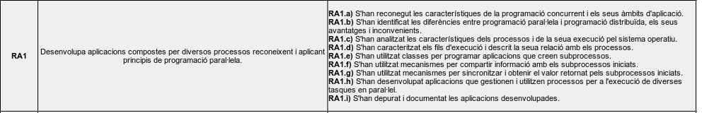
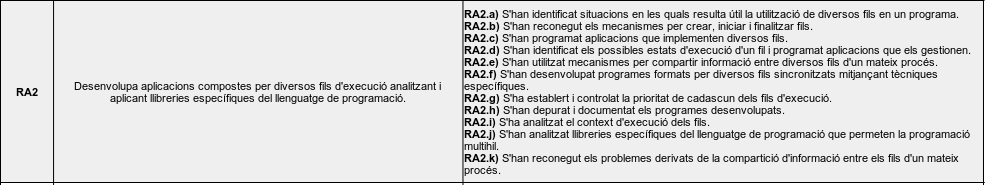
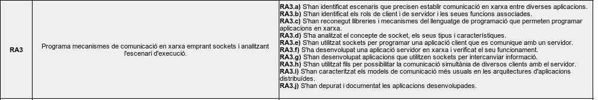
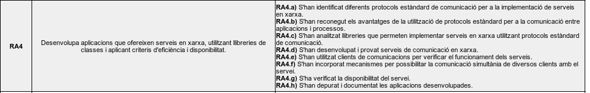
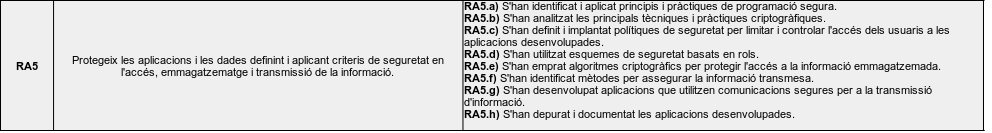

Objectius. Resultats d'aprenentatge
D'acord amb la normativa, els resultats d'aprenentatge del mòdul de PRogramació de Serveis i Processos són:
| RA1 | Desenvolupa aplicacions compostes per diversos processos reconeixent i aplicant principis de programació paral·lela. |
| RA2 | Desenvolupa aplicacions compostes per diversos fils d'execució analitzant i aplicant llibreries específiques del llenguatge de programació. |
| RA3 | Programa mecanismes de comunicació en xarxa emprant sockets i analitzant l'escenari d'execució. |
| RA4 | Desenvolupa aplicacions que ofereixen serveis en xarxa, utilitzant llibreries de classes i aplicant criteris d'eficiència i disponibilitat. |
| RA5 | Protegeix les aplicacions i les dades definint i aplicant criteris de seguretat en l'accés, emmagatzematge i transmissió de la informació. |
Resultats d'aprenentatge i criteris d'avaluació
    
M'ho pots explicar millor?
La formació professional (FP) està dissenyada per preparar-vos per al món laboral, aportant-vos coneixements teòrics, i sobretot pràctics.
Cada mòdul formatiu cobreix un aspecte específic relacionat amb la vostra futura professió, i es divideix en diversos Resultats d'aprenentatge. És a dir... què heu de saber fer després de passar pel mòdul.
A més, cadascun d'aquesta Resultats d'Aprenentatge es divideixen en diferents Criteris d'Avaluació, que és el que s'usa pe avaluar-vos. Aquests criteris ens ajuden a veure si heu assolit els objectius.
Per què és important conèixer els resultats d’aprenentatge i els criteris d’avaluació?
- Orientació: Us ajuden a saber exactament què s’espera de vosaltres i què heu d’aprendre.
- Autoavaluació: Podeu utilitzar-los per avaluar el vostre propi progrés i veure en què necessiteu millorar.
- Transparència: Us donen una idea clara de com sereu avaluats, així no hi ha sorpreses al final del mòdul.
Com veieu, els resultats d'aprenentatge i els criteris d’avaluació són com un mapa que us guia durant el curs. I segons el qual, girarà tot el que es veu al mòdul.
I com influeix això en la qualificació?
-
Els Resultats d'aprenentatge i els Criteris d'Avaluació ens serviran com a guia per avaluar els vostres coneixements i destresses.
-
Heu de tindre en compte, que per superar un mòdul, heu de tindre tots els resultats d'aprenentatge superats.
-
Cada resultat d'aprenentatge, influïrà en major o menor mesura en la qualificació final del mòdul.
-
Alguns d'estos CAs seran avaluats en la formació en empresa
Ara que ja sabeu què són els resultats d'aprenentatge i els criteris d'Avaluació, podeu tornar a fer una ullada ràpida als apartats anteriors, per tal d'entendre millor de què va el mòdul!